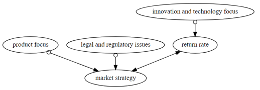

COAT-MB
Which attributes jointly inform a rating?
Markov blanket
Discover a compact set of factors that jointly inform a target.
- Input
- One numeric target + paired text.
- Output
- Factor definitions and a selected set.
COAT / Causal Representation Assistant
COAT discovers measurable attributes in reviews, news and other observations. Turn them into variables for your analysis.
Language models propose and measure candidate factors. Statistical feedback guides further discovery, causal-structure analysis and effect estimation.
“Very sweet apples, a rich aroma, but rather small.”
Define what each attribute means, then apply the rule to every review.
From reviews to measured variables, then statistical feedback.
Both reviews say the apples are sweet. So why are the ratings different? Perhaps something is missing.
First, a language model proposes variables, such as sweetness,
and defines how to measure them.
Statistical methods can then analyze relationships,
rather than letting the language model decide what causes what.
But analysis is not the end. Looking back, we notice a clue: bruising.
We add a measurement and analyze again.
Observations, variables, values, and statistical feedback form a loop.
The same approach can discover factors in news,
measure climate variables with tools,
or account for customer differences when estimating how emails affect website visits.
This is COAT-Learn: language models and statistics working together, from observations to analysis.
Examples
Define an attribute, then apply the same measurement rule to every observation.
Interactive example
A rich apple aroma, very sweet taste, and small apples that fit in my lunch box.
Sweetness explicitly described in a review.
The highlighted passage supports this level under the displayed rule.
Select a value to inspect its observation and rule. Try R03, then select Aroma.
| Sample | Sweetness | Aroma | Size |
|---|---|---|---|
| R01 | |||
| R02 | |||
| R03 |

A visual attribute in a specified observation region.
Select a region to inspect its measurement rule.
Select a value to inspect its observation and rule.
| Sample | Local brightness | Shape difference |
|---|---|---|
| M01 | ||
| M02 |
The company announced a new cloud technology platform and described its research team's work.
Distinguish routine maintenance from a new technical development.
The highlighted passage supports this level under the displayed rule.
Select a value to inspect its observation and rule.
| Sample | Technical progress | Market expansion |
|---|---|---|
| N01 | ||
| N02 |
Define the region and quantity, then use code to calculate each measurement.
field = archive["air_temperature"].sel(
latitude=slice(-5, 5),
longitude=slice(210, 270),
)
factor = field.mean(("latitude", "longitude"))| Jan | Feb | Mar | Apr | May | Jun |
|---|---|---|---|---|---|
| 26.8 | 27.2 | 27.9 | 28.2 | 27.7 | 27.4 |
How COAT works
COAT links factor discovery with statistical analysis in a feedback loop.
A chat model reads selected observations and defines candidate factors.
An annotation model applies the same definitions across observations.
Conditional-independence tests ask what information remains after other variables are considered.
Statistical feedback directs the next proposal toward information the current factors leave unexplained.
“Similar measured attributes. Different ratings. What are we missing?”

Analysis goals
Discover factors, explore structure, or estimate effects.
Discover a compact set of factors that jointly inform a target.
Discover additional factors to refine the relationships among variables.
Find adjustment variables and estimate the average effect of an action.
Apply existing factor definitions to your data, or analyze a measured table and graph.
Get started
Research cases
See how COAT explores climate and financial news.
Climate / ENSO
A tool-using model defines regional measurements in NOAA reanalysis data. The study elicits 13 factors, recovers literature-consistent relationships and proposes a soil-temperature hypothesis for further investigation.

News / Microsoft
The study separates innovation, product, legal and strategic information. Factors discovered in the first 200 trading days are examined with strategies on the following 400 days.

The published work
Journal of Machine Learning Research
27(229):1–95, 2026
The journal extension adds COAT-PAG, COAT-ADJ and their identifiability analysis to the NeurIPS 2024 framework.
@article{JMLR:v27:25-2137,
author = {Chenxi Liu and Yongqiang Chen and Tongliang Liu and Mingming Gong and James Cheng and Bo Han and Kun Zhang},
title = {Discovering and Reasoning of Causality in the Hidden World with Large Language Models},
journal = {Journal of Machine Learning Research},
year = {2026},
volume = {27},
number = {229},
pages = {1--95},
url = {http://jmlr.org/papers/v27/25-2137.html}
}